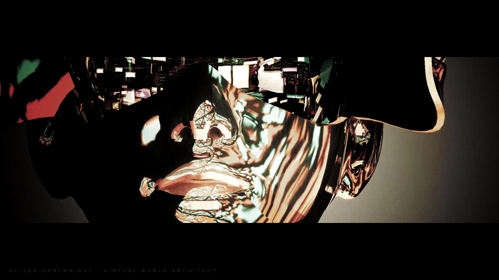
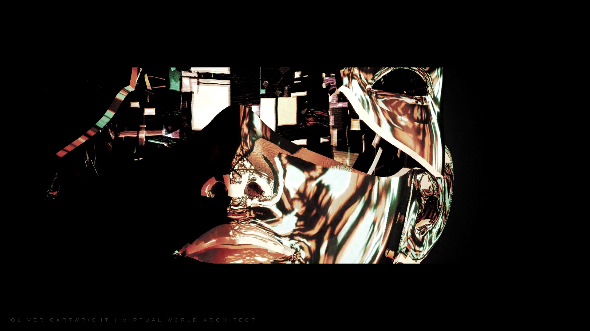
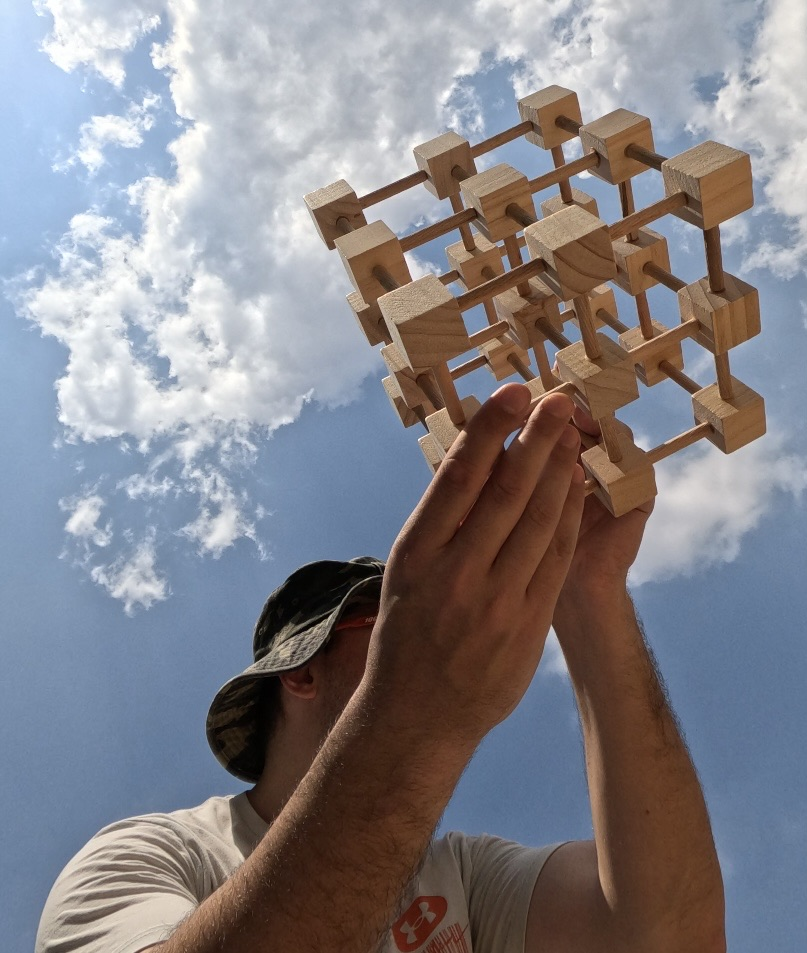

Cyclist Study – Early Structural Abstraction (2011)
An exploratory sketch decomposing the form of a cyclist into intersecting vectors and planes. This drawing initiated the investigation into how motion can be reduced to structural elements, foreshadowing later studies of dynamic, adaptive systems.

Process Documentation – Hand Drawing
A monochrome photograph capturing the drawing process in detail. This documentation highlights the manual construction of layered dynamic fields, underscoring the intention to create the impression of a living, responsive surface rather than static decoration.

Living Dynamics – Field Study I (2014)
A continuous field of flowing, layered strokes created to simulate an emergent, adaptive surface. This drawing represents an early attempt to visualize a living system capable of dynamic reconfiguration in response to environmental forces.

Living Dynamics – Field Study II (2014)
A further development of the prior study, refining the technique into more deliberate, rhythmic currents. The composition suggests the capacity of form to evolve organically, laying groundwork for later explorations of applied, real-time dynamics.

Dynamic Form – Plan View Study
A digital composition visualizing a plan view of a conceptual vehicle in continuous transformation. The form depicts an adaptive aerodynamic surface recalibrating itself in real time as it interacts with its environment.

Dynamic Form – Profile View Sequence
A triptych illustrating sequential adaptations of a vehicle’s profile as it traverses space. Each stage depicts a transformation in surface topology, proposing a vision of aerodynamics as an actively evolving system rather than a fixed design.

Hummingbird – Adaptive Morphology Study
A drawing combining the recognizable form of a hummingbird with an emerging structure of flowing, adaptive surfaces. This work bridges representational imagery with abstract system dynamics, suggesting that even organic life follows hidden structural logics.

Dynamic Anatomy – Back Form
An exploration of the human figure rendered as a continuous, evolving field of surface flows. The musculature dissolves into interwoven aerodynamic lines, prefiguring a vision of the body as a living system shaped by movement and perception.

Process Documentation – Live Drawing Preparation (2016)
A photograph of the artist preparing a live drawing performance. The image captures the direct, tactile engagement with linework and the emergence of dynamic structures in real time.

Live Drawing Installation – Detail (2016)
An intimate perspective on the artist engaged in the act of drawing, with the visual system projected in large scale behind. This juxtaposition underscores the translation of personal process into collective experience.

Live Drawing Installation – Overview (2016)
A wide view of the live drawing performance, showing projections of the evolving linework enveloping the audience. This setting emphasizes drawing as both process and immersive environment, merging observer and system.

Live Drawing Installation – Audience Perspective (2016)
A closer view of the live drawing stage amid the gathered crowd. The work becomes a shared, performative exploration of evolving forms, extending beyond the page into projected space.

Yuna Kim Motion Study
Ballpoint pen illustration capturing the kinetic grace of figure skater Yuna Kim. This drawing isolates gesture and momentum through reductive linework, prefiguring later abstractions of movement into form.

Hybrid Studies – Characters and Forms
Exploratory sketches blending humanoid figures, animal motifs, and dynamic line fields. This sheet served as a transitional investigation into how abstract flows could integrate with recognizable anatomy.

Collective Figure Study – Masked Observers
Large format drawing combining disparate figures, avian elements, and flowing structures. Created as an accumulation of motifs from earlier drawings, unified by a conceptual interest in perception and identity.

Self Portrait (2016)
3D digital sculpture exploring continuous deformation. The mirrored distortions of the head profile extend the earlier line abstractions into a volumetric, computational medium.

Fragments in Air – Virtual Environment Still
Rendered scene of floating shapes in a boundless sky. This visualization attempts to evoke cognitive fragments or perceptual constructs, referencing a mental landscape rather than physical space.
Ronin – Cinematic Study of Machine Perception (2024)
A real-time virtual film exploring the dissolution of identity in a synthetic environment. Named after the figure of the ronin—a masterless wanderer—the work depicts cognition as seen through the eyes of autonomous machine entities. The sequences merge procedural geometry, atmospheric distortion, and fragmented perspectives into a meditation on perception unanchored from any fixed point of reference.

Virtual Cyborg Mask – Cinematic Still I
Unreal Engine film still depicting a reflective mask-like form overlaid with environmental projections. Part of an experiment in real-time rendering and spatial composition.

Virtual Cyborg Mask – Cinematic Still II
Alternate perspective of the same Unreal Engine environment. The image merges virtual sculpture, projected imagery, and camera motion to simulate a synthetic subjectivity.

Cognography Model (2025)
Hand-assembled physical model representing a three-dimensional cognitive matrix. This construction signaled the transition from visual experimentation into system formalization.